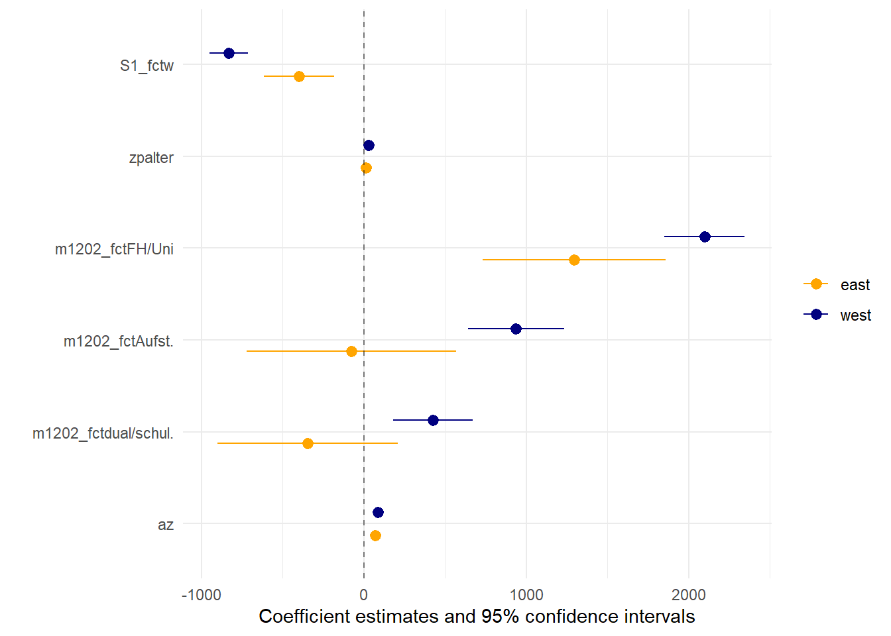

etbx <- haven::read_dta("./data/BIBBBAuA_2018_suf1.0.dta",
col_select = c("S1","F518_SUF","m1202","az","zpalter","F1605e","Bula")) %>%
filter(F518_SUF < 99998, m1202 %in% 1:4, zpalter < 9999 ) %>%
mutate(ausb = factor(m1202, levels = 1:4, labels = c("ohne","dual/schul.","Aufst.","FH/Uni")),
S1 = factor(S1,levels = 1:2,labels =c("m","w")))12 Schleifen & Funktionen
Schleifen im Sinne von for()-Loops werden in R selten verwendet. Stattdessen werden meist Funktionen mit Hilfe von lapply() bzw. map() aus {purrr} über eine Reihe von Werten geschleift. Die grundlegende Idee ist zunächst die gleiche wie bei klassischen for()-Loops: wir definieren erst eine Serie an Werten, für dann eine Operation (eine function()) ausgeführt werden soll.
Grundsätzlich können wir in R solche Schleife auf wirklich alles anwenden: data.frames(), Vektoren, lists. Das macht das Vorgehen sehr flexibel und kann uns beispielsweise helfen:
- alle Datensätze aus einem Verzeichnis einzulesen
# Namen aller csv-Dateien aus einem Verzeichnis
files <- list.files(path = "/pfad/...", pattern = ".csv$",full.names = T)
daten_list <-
map(files, function(x){
read.csv(x,header = T,sep = ";")
})- Grafiken für unterschiedliche Jahre/Untergruppen zu erstellen
plots_nach_Bula <-
map(1:16, function(bl){
plot_data <- etbx %>% filter(Bula == bl) # daten für Bundesland auswählen
title_var <- as_factor(unique(plot_data$Bula)) # Titel aus Bula-Variable
# eigentlicher plot
plot_data %>%
ggplot(aes(x=az,y=F518_SUF, color = S1)) +
geom_point() +
labs(title = title_var)
})
plots_nach_Bula[[3]]Modellserien: Ein typisches Beispiel ist eine Modellserie. Wir möchten folgende Modelle schätzen:
Modell 1 =
F518_SUF ~ azModell 2 =
F518_SUF ~ az + S1Modell 3 =
F518_SUF ~ az + S1 + m1202Modell 4 =
F518_SUF ~ az + S1 + m1202 + zpalter
Natürlich würde so etwas funktionieren, wäre aber ein Verstoß gegen das DRY-Prinzip[^dry] und anfällig für Vertipper:
mod1 <- lm(F518_SUF ~ az, data = etbx)
mod2 <- lm(F518_SUF ~ az + S1, data = etbx)
mod3 <- lm(F518_SUF ~ az + S1 + m1202, data = etbx)
mod4 <- lm(F518_SUF ~ az + S1 + m1202 + zpalter, data = etbx)12.1 Modelleserie als function() mit lapply() erstellen
Wir definieren dann eine function(), in der wir angeben, dass das angegebene Argument die Formel für ein lm() sein soll - das Ergebnis dieses lm() `lassen wir uns dann ausgeben.
mod_function <- function(modx){
mx <- lm(formula = modx,data = etbx)
return(mx)
}Wenn wir jetzt in mod_function eine Modellformel angeben, wird ein lm() berechnet:
mod_function("F518_SUF ~ az")
Call:
lm(formula = modx, data = etbx)
Coefficients:
(Intercept) az
-371.3 102.1 Im nächsten Schritt können wir jetzt eine Liste mit verschiedenen Modellvarianten erstellen:
mlst <- list(
"Modell 1" = "F518_SUF ~ az",
"Modell 2" = "F518_SUF ~ az + S1",
"Modell 3" = "F518_SUF ~ az + S1 + m1202",
"Modell 4" = "F518_SUF ~ az + S1 + m1202 + zpalter"
)Wir können die Elemente einer list() entweder mit [[]] oder (ggf.) über ihren Namen aufrufen. Hier haben wir vor dem = einen Namen angegeben:
mlst[[4]][1] "F518_SUF ~ az + S1 + m1202 + zpalter"mlst$`Modell 4`[1] "F518_SUF ~ az + S1 + m1202 + zpalter"Mit lapply wenden wir unsere mod_function jetzt auf diese Liste von Modellen an:
mods <- lapply(mlst,mod_function)
mods$`Modell 1`
Call:
lm(formula = modx, data = etbx)
Coefficients:
(Intercept) az
-371.3 102.1 mods$`Modell 2`
Call:
lm(formula = modx, data = etbx)
Coefficients:
(Intercept) az S1w
359.51 91.73 -683.55 Außerdem können wir uns alle Modelle auch direkt in modelsummary ausgeben lassen:
modelsummary::modelsummary(mods,stars = T,gof_omit = "IC|RM|Log")| Modell 1 | Modell 2 | Modell 3 | Modell 4 | |
|---|---|---|---|---|
| (Intercept) | -371.260*** | 359.515*** | -1526.254*** | -2609.682*** |
| (89.299) | (106.687) | (118.849) | (153.625) | |
| az | 102.097*** | 91.733*** | 82.716*** | 83.152*** |
| (2.234) | (2.376) | (2.321) | (2.313) | |
| S1w | -683.549*** | -725.053*** | -755.165*** | |
| (55.184) | (53.540) | (53.414) | ||
| m1202 | 797.911*** | 778.380*** | ||
| (24.734) | (24.706) | |||
| zpalter | 24.282*** | |||
| (2.194) | ||||
| Num.Obs. | 16521 | 16521 | 16521 | 16521 |
| R2 | 0.112 | 0.120 | 0.173 | 0.179 |
| R2 Adj. | 0.112 | 0.120 | 0.172 | 0.178 |
| F | 2089.519 | 1131.116 | 1148.445 | 898.308 |
| + p < 0.1, * p < 0.05, ** p < 0.01, *** p < 0.001 |
12.2 if in function()
Wir können unsere function() auch weitere Argumente aufnehmen und auch if und else-Statements einbauen. Hier ein Beispiel: wenn wir das zweite Argument add_age auf TRUE setzen, wird der add_controls hinzugefügt:
add_controls <- c("+ zpalter + I(zpalter^2)")
mod_function2 <- function(modx, add_age){
if(add_age == T) {
mx <- lm(formula = paste0(modx,add_controls),data = etbx)
} else {
mx <- lm(formula = paste0(modx),data = etbx)
}
return(mx)
}
mod_function2("F518_SUF ~ az",add_age=F)
Call:
lm(formula = paste0(modx), data = etbx)
Coefficients:
(Intercept) az
-371.3 102.1 mod_function2("F518_SUF ~ az",add_age=T)
Call:
lm(formula = paste0(modx, add_controls), data = etbx)
Coefficients:
(Intercept) az zpalter I(zpalter^2)
-2498.4123 102.5538 66.6746 -0.4356 Wenn wir einen Standardwert für ein Argument vergeben möchten, dann können wir das mit = angeben. Hier erweitern wir unsere Modellfunktion um einen tidy()-Schritt - der aber mit Hilfe einer Option tidy_mod ausgeschaltet werden kann, indem er auf FALSE gesetzt wird.
mod_function3 <- function(modx, tidy_mod = T){
mx <- lm(formula = modx,data = etbx)
if(tidy_mod == T) mx <- tidy(mx,conf.int = T)
return(mx)
}
mod_function3("F518_SUF ~ az")# A tibble: 2 × 7
term estimate std.error statistic p.value conf.low conf.high
<chr> <dbl> <dbl> <dbl> <dbl> <dbl> <dbl>
1 (Intercept) -371. 89.3 -4.16 0.0000323 -546. -196.
2 az 102. 2.23 45.7 0 97.7 106.mod_function3("F518_SUF ~ az",tidy_mod = F)
Call:
lm(formula = modx, data = etbx)
Coefficients:
(Intercept) az
-371.3 102.1 12.3 List zu data.frame
Wenn die Einzelbestandteile einer list bereits data.frames sind, können wir mit bind_rows() diese zu einem data.frame zusammenfügen. Mit .id="" können wir eine Variable erstellen, welche die Listennamen enthält:
mod_l3 <- lapply(mlst,mod_function3)
lapply(mod_l3,class)$`Modell 1`
[1] "tbl_df" "tbl" "data.frame"
$`Modell 2`
[1] "tbl_df" "tbl" "data.frame"
$`Modell 3`
[1] "tbl_df" "tbl" "data.frame"
$`Modell 4`
[1] "tbl_df" "tbl" "data.frame"bind_rows(mod_l3,.id="Mod_name")lapply(mlst,mod_function3) %>% bind_rows(.id="Mod_name")12.4 Modelle auf Subdatensets anwenden
“Habt ihr das auch mal getrennt für Ost/West gerechnet?”
etbx %>%
mutate(east = ifelse(Bula > 10,"east","west")) %>% # Berlin = east
split(.$east) %>%
map(.,~lm("F518_SUF ~ az + ausb + zpalter + S1",data = .x)) %>%
modelsummary::modelplot(.,coef_omit = "Intercept") +
geom_vline(aes(xintercept = 0), linetype = 2, alpha = .5) +
scale_color_manual(values = c("orange","navy")) 
etbx %>%
mutate(east = ifelse(Bula > 10,"east","west")) %>% # Berlin = east
split(.$east) %>%
map(.,~lm("F518_SUF ~ az + ausb + zpalter + S1",data = .x)) %>%
modelsummary::modelsummary(.,stars = T,gof_omit = "IC|RM|Log")| east | west | |
|---|---|---|
| (Intercept) | -509.068 | -1731.303*** |
| (380.613) | (187.221) | |
| az | 71.902*** | 88.157*** |
| (5.374) | (2.562) | |
| ausbdual/schul. | -345.508 | 425.407*** |
| (283.463) | (124.716) | |
| ausbAufst. | -75.817 | 936.694*** |
| (329.344) | (151.324) | |
| ausbFH/Uni | 1294.027*** | 2097.328*** |
| (287.443) | (126.477) | |
| zpalter | 12.272** | 28.938*** |
| (4.720) | (2.468) | |
| S1w | -399.585*** | -830.732*** |
| (110.121) | (60.787) | |
| Num.Obs. | 3438 | 13083 |
| R2 | 0.124 | 0.201 |
| R2 Adj. | 0.122 | 0.201 |
| + p < 0.1, * p < 0.05, ** p < 0.01, *** p < 0.001 |
12.5 adhoc function
Wir müssen aber nicht notwendigerweise erst eine Funktion definieren, um sie dann anzuwenden. Wir können die Funktion auch im gleichen Zug wie lapply() definieren:
mods3 <- lapply(mlst,function(modx){
mx <- lm(formula = modx,data = etbx)
return(mx)
})
mods3$`Modell 1`
Call:
lm(formula = modx, data = etbx)
Coefficients:
(Intercept) az
-371.3 102.1 12.6 Loop mit for
for(i in 1:8){
print(i)
}[1] 1
[1] 2
[1] 3
[1] 4
[1] 5
[1] 6
[1] 7
[1] 8Kleines Beispiel: Zeile für Zeile der ersten 8 Zeilen aus etbx ausgeben:
for(i in 1:8){
etbx %>% slice(i) %>% print()
}12.7 Übungen
etb_ue12 <-
haven::read_dta("./data/BIBBBAuA_2018_suf1.0.dta",
col_select = c("S1","F518_SUF","m1202","az","zpalter","F1605e")) %>%
filter(F518_SUF < 99998, m1202 %in% 1:4, zpalter < 9999 ) %>%
mutate(ausb = factor(m1202, levels = 1:4, labels = c("ohne","dual/schul.","Aufst.","FH/Uni")),
S1 = factor(S1,levels = 1:2,labels =c("m","w")))Erstellen Sie eine Funktion, welche den
data.frameetb_ue12für einlm()verwendet und als Input eine Modellformel verwendet. Testen Sie Ihre Funktion mit folgender Formel:az ~ S1 + ausb + zpalter(Denken Sie daran, die Formula in""zu setzen).Erstellen Sie eine Liste mit folgenden Modellen:
- Modell 1
"az ~ S1", - Modell 2
"az ~ S1 + ausb", - Modell 3
"az ~ S1 + ausb + zpalter"
- Modell 1
Verwenden Sie
lapply()und die erstellte Funktion, um die Modelle zu schätzen und inmodelsummary()anzuzeigenErweitern Sie Ihre Funktion um ein zweites Argument
only_women, welches über einTRUE/FALSEsteuert ob lediglich die Beobachtungen von weiblichen Befragten verwendet werden:etb_ue12 %>% filter(S1 == "w"). Legen Sie innerhalb der Funktion die entsprechenden Schritt mit einerif-Bedingung versehen.
12.8 Anhang: Schleifen mit {purrr}
Im {tidyverse} stellt das Paket {purrr} map() zur Verfügung, das function(x) { ... x} auf ~ und .x abkürzen lässt:
mods <- map(mlst,~lm(formula = .x,data = etbx))Sehr hilfreich ist map_dfr: hier wir aus dem Ergebnis der Schleife ein data.frame” mit row_bind() erstellt. Mit .id = können wir eine Spalte erstellen, welche die Namen der Liste enthält (Hier die Modellnamen):
map_dfr(mlst,~lm(formula = .x,data = etbx) %>% tidy(.),.id = "mod")# A tibble: 14 × 6
mod term estimate std.error statistic p.value
<chr> <chr> <dbl> <dbl> <dbl> <dbl>
1 Modell 1 (Intercept) -371. 89.3 -4.16 3.23e- 5
2 Modell 1 az 102. 2.23 45.7 0
3 Modell 2 (Intercept) 360. 107. 3.37 7.54e- 4
4 Modell 2 az 91.7 2.38 38.6 2.08e-312
5 Modell 2 S1w -684. 55.2 -12.4 4.41e- 35
6 Modell 3 (Intercept) -1526. 119. -12.8 1.44e- 37
7 Modell 3 az 82.7 2.32 35.6 4.57e-268
8 Modell 3 S1w -725. 53.5 -13.5 1.47e- 41
9 Modell 3 m1202 798. 24.7 32.3 1.79e-221
10 Modell 4 (Intercept) -2610. 154. -17.0 3.57e- 64
11 Modell 4 az 83.2 2.31 36.0 1.33e-272
12 Modell 4 S1w -755. 53.4 -14.1 4.06e- 45
13 Modell 4 m1202 778. 24.7 31.5 1.28e-211
14 Modell 4 zpalter 24.3 2.19 11.1 2.21e- 28Wer mehr über purrr und map() erfahren möchte, findet hier eine hervorragende Einführung.
12.8.1 loop über Variablen
Möchten wir über Variablen loopen, müssen wir R explizit mitteilen, dass die mitgegebenen strings als Variablen zu verstehen sind:
for(v in c("ausb","S1","F1605e")){
etbx %>% count(v) %>% print()
}Error in `count()`:
! Must group by variables found in `.data`.
✖ Column `v` is not found.Das können wir mit !!rlang::sym(v):
for(v in c("ausb","S1","F1605e")){
etbx %>% count(!!rlang::sym(v)) %>% print()
}# A tibble: 4 × 2
ausb n
<fct> <int>
1 ohne 886
2 dual/schul. 7679
3 Aufst. 1460
4 FH/Uni 6496
# A tibble: 2 × 2
S1 n
<fct> <int>
1 m 8442
2 w 8079
# A tibble: 4 × 2
F1605e n
<dbl+lbl> <int>
1 1 [ja] 7104
2 2 [nein] 3970
3 9 [keine Angabe] 43
4 NA 5404